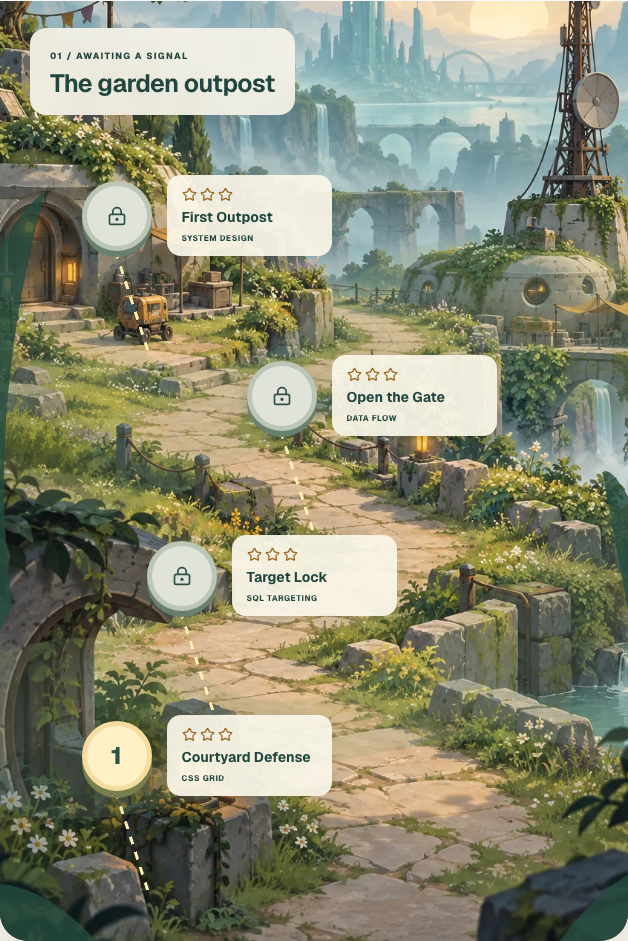
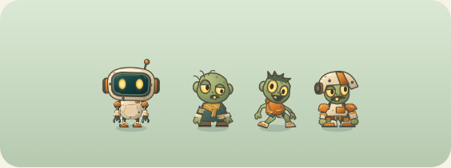
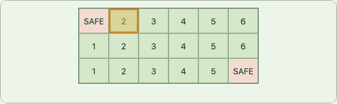
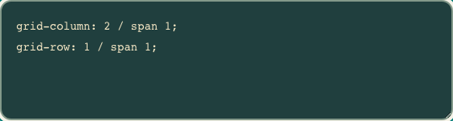
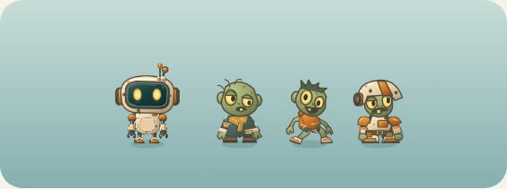
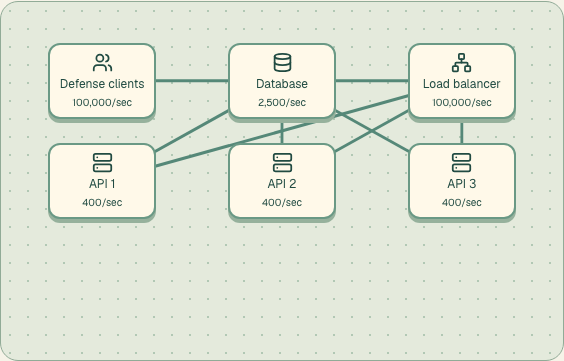

An upward journey through three districts.
Guide the net to the target column. Keep survivor tiles clear.



Real CSS geometry and local SQLite queries.
Connect healthy services, inspect the traffic, then adapt as the waves arrive.


Scenario capacities are teaching assumptions. Outcomes come from the simulator.
Routing, availability, caching, freshness and cost.